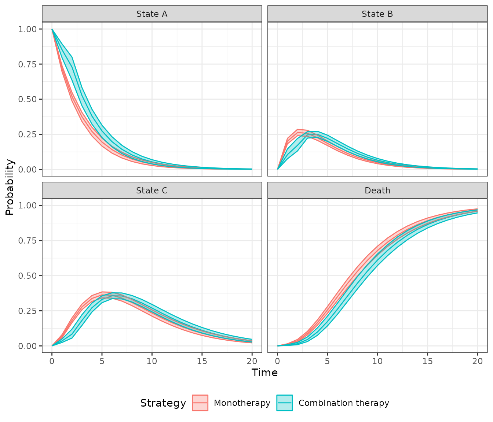
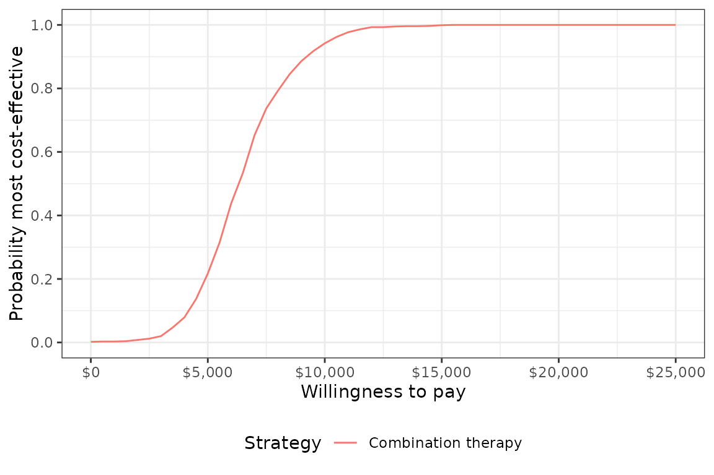

The simplest models in hesim are cohort discrete time
state transitions models (cDTSTMs), which encompass both
time-homogeneous and time-inhomogeneous Markov models. Transition
probabilities between states are constant over time in time-homogeneous
models whereas they can vary over time in time-inhomogeneous models.
We consider a simple example by replicating the HIV model developed by Chancellor et al. and used for didactic purposes in the Decision Modeling for Health Economic Evaluation textbook. The analysis compares two treatment strategies, zidovudine monotherapy and zidovudine + lamivudine combination therapy. While the model is technically time-inhomogeneous because patients are assumed to only use lamivudine for 2 years before switching back to monotherapy, transition probabilities only change once so it might be referred to as (mostly) homogeneous.
The model consists 4 health states. Ordered from worst to best to worst, they are: State A (CD4 cells > 200 and < 500 cells/mm3), State B (CD4 < 200 cells/mm3), State C (AIDS), and State D (death). The model assumes that patients can transition to any state that is more severe (i.e., progress) but cannot transition back to a more severe state.
Transition probability matrices are the core of any cDTSTM. They can,
in general, be constructed by either (i) using an explicit statistical
model (e.g., via params_mlogit()) or (ii) by specifying
transition probabilities for each parameter sample, treatment strategy,
patient, and (optionally) time interval (e.g., via
tparams_transprobs()). The latter can either by done by
constructing the transition probability matrices directly “by hand” or
by defining the model in terms of expressions with
define_model(). We will construct a
tparams_transprobs object with
define_model()in this vignette, but an example without it
is available in the ?CohortDtstm help file.
We set up the model for two treatment strategies and one representative patient.
library("hesim")
library("data.table")
strategies <- data.table(strategy_id = 1:2,
strategy_name = c("Monotherapy", "Combination therapy"))
patients <- data.table(patient_id = 1)
states <- data.table(state_id = 1:3,
state_name = c("State A", "State B", "State C"))
hesim_dat <- hesim_data(strategies = strategies,
patients = patients,
states = states)
print(hesim_dat)## $strategies
## strategy_id strategy_name
## <int> <char>
## 1: 1 Monotherapy
## 2: 2 Combination therapy
##
## $patients
## patient_id
## <num>
## 1: 1
##
## $states
## state_id state_name
## <int> <char>
## 1: 1 State A
## 2: 2 State B
## 3: 3 State C
##
## attr(,"class")
## [1] "hesim_data"The get_labels() function can be used to obtain nice
labels for plots and summary tables.
labs <- get_labels(hesim_dat)
print(labs)## $strategy_id
## Monotherapy Combination therapy
## 1 2
##
## $state_id
## State A State B State C Death
## 1 2 3 4Counts of transitions at yearly intervals between each of the 4 health states were available from a longitudinal dataset from Chelsea and Westminister hospital.
trans_mono <- matrix(c(1251, 350, 116, 17,
0, 731, 512, 15,
0, 0, 1312, 437,
0, 0, 0, 469),
ncol = 4, nrow = 4, byrow = TRUE)
colnames(trans_mono) <- rownames(trans_mono) <- c("A", "B", "C", "D")
print(trans_mono)## A B C D
## A 1251 350 116 17
## B 0 731 512 15
## C 0 0 1312 437
## D 0 0 0 469The transition probabilities from state \(r\) to each of the 4 states (State A, State B, State C, and State D) can be modeled using Dirichlet distributions, which are parameterized by a vector of concentration parameters \(\alpha = (\alpha_{r1}, \alpha_{r2}, \alpha_{r3}, \alpha_{r4})\). The Dirichlet distribution is particularly useful for modeling uncertainty in the transition probabilities because it is a conjugate prior for the multinomial distribution. The posterior distribution of \(\alpha\) consequently follows a Dirichlet distribution which can be thought of as the “effective sample size” for each transition (see Appendix).
Treatment effects are defined in terms of the relative risk, which is assumed to reduce the probability of all transitions to a more severe health state by an equal amount. We work with the log relative risk since it is approximately normally distributed. The estimated relative risk of disease progression is 0.509 (95% CI 0.365 to 0.710). We can then calculate the mean and standard error on the log scale.
The cost-effectiveness analysis is based on life-years, meaning that each health state is assigned a utility value of 1. The costs of zidovudine and lamivudine are $2,278 and $2,086.50, respectively. Medical costs are split into direct medical and community medical costs.
The parameter estimates are stored in a list.
To perform a probabilistic sensitivity analysis (PSA), it is
necessary to draw samples of the parameters from suitable probability
distributions. While the probability distributions could have been drawn
manually and stored in the params object above, it can be
more easily done by using random number generation functions with
define_rng().
As noted above, we draw the transition probabilities with monotherapy from a Dirichlet distribution and the relative risk (of a transition to a worse state with combination therapy relative to monotherapy) from a lognormal distribution. Drug costs and utility are assumed to be fixed while medical costs are drawn from gamma distributions.
Sampled parameters values are stored in a list, meaning that samples
for each parameter can be stored as either a vector or
data.table (or matrix or data.frame). For
instance, we sample medical costs for each (non-death) health state from
gamma distributions and they a stored in a data.table (one
row for each sample and one column for each health state). Likewise, the
parameters of each cell in the transition probability matrix are store
in a data.table, with parameters of the
data.table ordered rowwise across the columns. On the other
hand, samples of the relative risk are stored in a vector.
rng_def <- define_rng({
lrr_se <- (lrr_upper - lrr_lower)/(2 * qnorm(.975)) # Local object
# not returned
list( # Parameters to return
p_mono = dirichlet_rng(alpha_mono),
rr_comb = lognormal_rng(lrr_mean, lrr_se),
c_zido = c_zido,
c_lam = c_lam,
c_dmed = gamma_rng(mean = c_dmed_mean, sd = c_dmed_mean),
c_cmed = gamma_rng(mean = c_cmed_mean, sd = c_cmed_mean),
u = u
)
}, n = 1000)In most statistical models, the underlying parameters are
“transformed” into more relevant parameters for prediction. For
instance, if a multinomial logistic regression is used parameterize
transition probabilities, the coefficients are used to predict the
probabilities. While transition, cost, and utility models can be
parameterized using supported statistical models with
hesim::params objects, they can also, in some cases, be
parameterized using the transformed parameters themselves with
hesim::tparams objects.
We will use the transformed parameter approach here by using
define_tparams() to define tparams objects as
a function of the underlying parameters and input data (treatment
strategies and patients). We generate the input data using
hesim::expand().
## strategy_id patient_id strategy_name
## <int> <num> <char>
## 1: 1 1 Monotherapy
## 2: 2 1 Combination therapyOperations in a define_tparams() block are performed
using the columns from the input data and a list of parameters . To
maximize computational efficiency, all operations are vectorized across
the rows in the data and PSA samples. Parameters not included in a
transformed parameter function are assumed constant across patients and
treatment strategies. A list must be returned with elements for the
transition probability matrix, costs, and utilities.
An important helper function is tpmatrix(), which allows
users to define transition matrices as a function of other parameters.
In this example, transition probabilities are defined in terms of the
transition matrix for monotherapy (p_mono) and the relative
risk (rr). The relative risk is simply 1 for monotherapy
(since the corresponding transition matrix is just p_mono)
and equal to rr_comb for combination therapy.
The only costs in the model that vary across treatment strategies (rather than just states) are drug costs. The monotherapy treatment strategy include the cost of zidovudine only whereas the combination therapy includes the costs of both zidovudine and lamivudine.
Parameters may depend on time (since the start of the model) by using
the package defined time variable. The time
variable corresponds to the stopping time of time intervals, which are
specified using the times argument in
define_tparams(). Since patients are only assumed to use
lamivudine for two years, rr_comb and the costs of
lamivudine are not applied beyond year 2.
tparams_def <- define_tparams({
## The treatment effect (relative risk) is transformed so that it varies by
## strategies and only applies for the first 2 years (Monotherapy is
## the reference strategy).
rr <- ifelse(strategy_name == "Monotherapy" | time > 2, 1, rr_comb)
list(
tpmatrix = tpmatrix(
C, p_mono$A_B * rr, p_mono$A_C * rr, p_mono$A_D * rr,
0, C, p_mono$B_C * rr, p_mono$B_D * rr,
0, 0, C, p_mono$C_D * rr,
0, 0, 0, 1
),
utility = u,
costs = list(
drug = ifelse(strategy_name == "Monotherapy" | time > 2,
c_zido, c_zido + c_lam),
community_medical = c_cmed,
direct_medical = c_dmed
)
)
}, times = c(2, Inf))The economic model is defined by using define_model() to
combine the underlying parameters with the expressions for random number
generation and parameter transformation.
mod_def <- define_model(tparams_def = tparams_def,
rng_def = rng_def,
params = params)A economic model (of class CohortDtstm) can be created
from the defined model and input data using the generic function
create_CohortDtstm(). The economic model is an
R6 object consisting of a transition model
(trans_model) for simulating transition probabilities with
sim_stateprobs(), a utility model for simulating
quality-adjusted life-years with sim_qalys(), and a set of
cost models (for each cost category) for simulating costs with
sim_costs().
econmod <- create_CohortDtstm(mod_def, input_data)At the start of the model, all patients are assumed to be in State A
(the default setting of the transition model of class
CohortDtstmTrans). State occupancy probabilities are
generated by simulating the discrete time Markov chain.
econmod$sim_stateprobs(n_cycles = 20)
head(econmod$stateprobs_)## sample strategy_id patient_id grp_id state_id t prob
## <num> <int> <int> <int> <num> <num> <num>
## 1: 1 1 1 1 1 0 1.0000000
## 2: 1 1 1 1 1 1 0.7100136
## 3: 1 1 1 1 1 2 0.5041193
## 4: 1 1 1 1 1 3 0.3579315
## 5: 1 1 1 1 1 4 0.2541362
## 6: 1 1 1 1 1 5 0.1804402A plot can be generated quickly using the
autoplot.stateprobs() method. As expected, patients survive
longer with combination therapy.
autoplot(econmod$stateprobs_, labels = labs,
ci = TRUE, ci_style = "ribbon")
Costs and quality-adjusted life-years (QALYs) are computed by integrating the previously simulated state probabilities. To maintain consistency with Chancellor et al., we approximate the integral with a right Riemann sum, which is simply a sum of costs and QALYs measured at the right endpoint of each interval (e.g., costs during model cycle 1 are measured at time 1 (rather than at say, time 0).
econmod$sim_qalys(dr = 0, integrate_method = "riemann_right")
head(econmod$qalys_)## sample strategy_id patient_id grp_id state_id dr qalys lys
## <num> <int> <int> <int> <int> <num> <num> <num>
## 1: 1 1 1 1 1 0 2.445842 2.445842
## 2: 1 1 1 1 2 0 1.675727 1.675727
## 3: 1 1 1 1 3 0 3.520198 3.520198
## 4: 1 2 1 1 1 0 3.472488 3.472488
## 5: 1 2 1 1 2 0 1.724961 1.724961
## 6: 1 2 1 1 3 0 3.511484 3.511484
econmod$sim_costs(dr = 0.06, integrate_method = "riemann_right")
head(econmod$costs_)## sample strategy_id patient_id grp_id state_id dr category costs
## <num> <int> <int> <int> <int> <num> <char> <num>
## 1: 1 1 1 1 1 0.06 drug 4595.761
## 2: 1 1 1 1 2 0.06 drug 2920.903
## 3: 1 1 1 1 3 0.06 drug 5213.823
## 4: 1 2 1 1 1 0.06 drug 9580.295
## 5: 1 2 1 1 2 0.06 drug 3317.521
## 6: 1 2 1 1 3 0.06 drug 5105.097A decision analysis is performed by comparing combination therapy to monotherapy.
ce_sim <- econmod$summarize()
wtp <- seq(0, 25000, 500)
cea_pw_out <- cea_pw(ce_sim, comparator = 1, dr_qalys = 0, dr_costs = .06,
k = wtp)The incremental cost-effectiveness ratio (ICER) estimated using means from the PSA is very close to the estimate from the deterministic analysis from Chancellor et al.
## Outcome 2
## <fctr> <char>
## 1: Incremental QALYs 0.93 (0.55, 1.22)
## 2: Incremental costs 5,830 (2,635, 9,780)
## 3: Incremental NMB 40,481 (22,545, 55,126)
## 4: ICER 6,295A cost-effectiveness acceptability curve shows that the probability that combination therapy is more cost-effective than monotherapy increases quickly with the willingness to pay (WTP) for a QALY. At $10,000, the probability is 0.949 and approaches 1 at slightly higher WTP values.
plot_ceac(cea_pw_out, labels = labs)
The multinomial distribution is a discrete probability distribution for the number of successes for each of k mutually exclusive categories in n trials. The probabilities of the categories are given by \(\pi_1,\ldots, \pi_k\) with \(\sum_{j=1}^k \pi_j=1\) and each \(\pi_j\) defined on \([0,1]\). The Dirichlet distribution is parameterized by the concentration parameters \(\alpha_1,\ldots, \alpha_k\) with \(\alpha_j > 0\). Letting \(x_1,\ldots, x_k\) denote the number of successes in each category, the prior distribution and likelihood are,
\[ \begin{aligned} p(\pi_1,\ldots,\pi_k |\alpha_1,\ldots, \alpha_k) = \text{Dirichlet}(\alpha_1,\ldots,\alpha_k) \\ p(x_1,\ldots,x_k | \pi_1,\ldots,\pi_k) = \text{Multin}(n, \pi_1,\ldots,\pi_k). \end{aligned} \]
The posterior distribution for \(\pi_1,\ldots,\pi_k\) is then given by,
\[ p\left(\pi_1,\ldots,\pi_k| x_1,\ldots,x_k, \alpha_1,\ldots,\alpha_k \right) = \text{Dirichlet}\left(\alpha_1 + x_1, \ldots, \alpha_k + x_k\right). \]